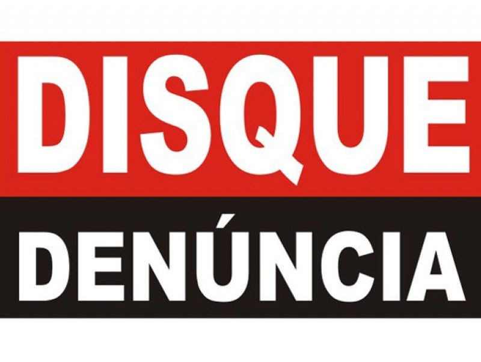
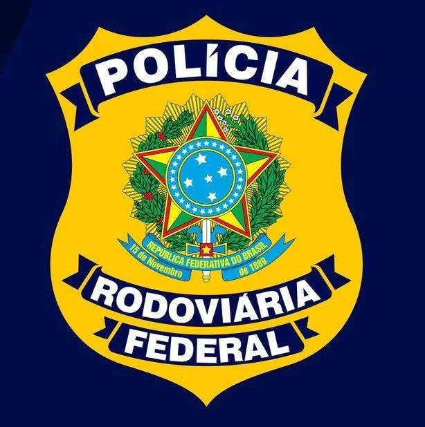
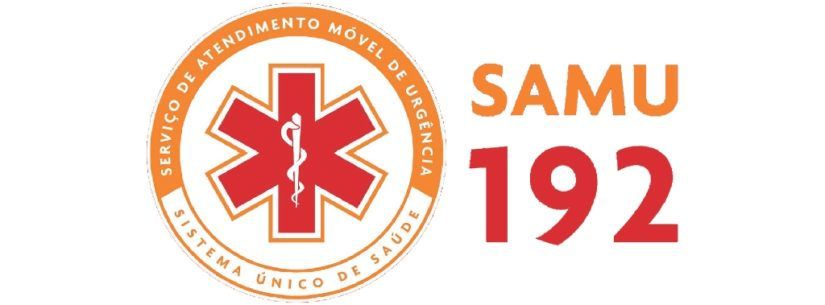
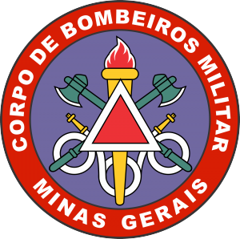
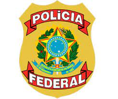
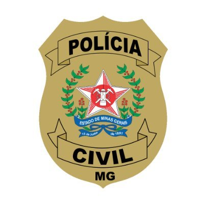

Página de contato SOS Minas!
Aqui te ajudaremos a entrar em contato com autoridades locais para poder lidar com os problemas das queimadas em Minas Gerais. Se você quer conhecer mais sobre esse tipo de assunto através de artigos, conheça o nosso Blog.
181: Disque Denúncia.
O disque Denúncia recebe todo tipo de informe sobre crimes, tais como assalto, tráfico de drogas, arrombamento, porte ilegal de armas, sequestro, atividades ilícitas, foragidos ou procurados pela Polícia que estejam escondidos em algum local.
190: Polícia Militar.
O 190 destina-se a atender a população em situações de emergência policial, portanto seja breve, outra pessoa pode estar correndo risco real e precisando da PM ou mais rápido possível.
191: Polícia Rodoviária Federal.
Telefone utilizado pela Polícia Rodoviária Federal onde a população pode ser vinculada para denunciar ocorrências nas rodovias federais como, por exemplo, crimes, acidentes ou irregularidades.
192: SAMU - Secretaria da Saúde.
O Serviço de Atendimento Móvel de Urgência ( SAMU 192 ) tem como objetivo atender precocemente a vítima caso ocorra uma situação de urgência ou emergência que possa acarretar sofrimento, sequelas ou até mesmo a morte.
193: Corpo de Bombeiros.
O Corpo de Bombeiros Militar de Minas Gerais (CBMMG) atende incidentes que envolvem casos de urgência e emergência relacionados a incêndios, busca e resgate de pessoas, atendimento pré-hospitalar e prevenção e combate a incêndio.
194: Polícia Federal.
Atua também na segurança pública para a preservação da ordem pública e da incolumidade das pessoas, bem como dos bens e interesses da União, exercendo atividades de polícia marítima, aeroportuária e de fronteiras, repressão ao tráfico de entorpecentes, contrabando e descaminho.
197: Polícia Civil.
O foco do serviço é o atendimento a denúncias anônimas que resultem em investigação e, não, em situações de emergência. Nesses casos, podemos acionar os números 190 ( Polícia Militar ), 193 (Corpo de Bombeiros) e 197 ( Polícia Civil ).
Você também pode entrar em contato direto com o Ibama:
-Telefone de contato: 0800 061 8080
-Horário de atendimento: Segunda à sexta, das 07h00 às 19h00.Site:
http://www.ibama.gov.br/fale-com-o-ibama-rodape Entre no site para mais informações!